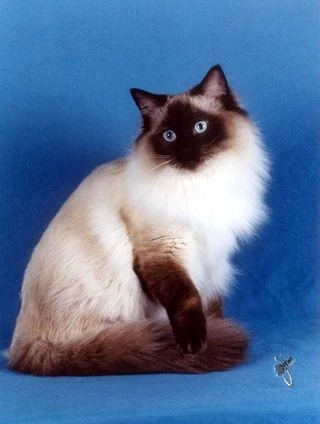
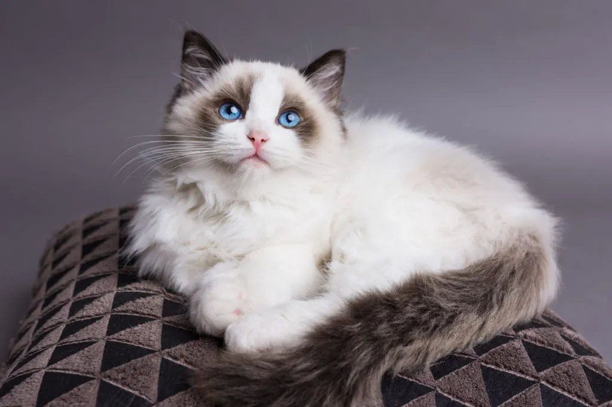
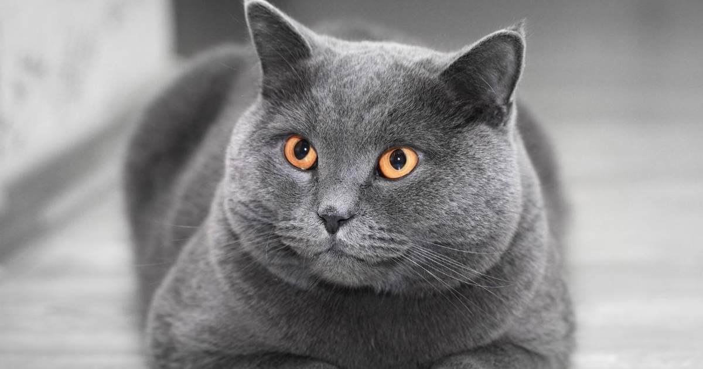

Bienvenido a la wiki de los gatos
Una página realizada para demostrar los gatos más comunes que existen en el país de Colombia.
-
Gato Criollo / Mestizo

Sin duda, es el más popular en Colombia. No es una raza pura, sino la mezcla de varias razas. Son extremadamente resistentes a enfermedades gracias a su diversidad genética, adaptables y pueden vivir 15 años o más con buenos cuidados. Vienen en todos los colores, tamaños y pelajes.
-
Persa

Muy popular por su pelaje largo y sedoso, cara redonda y aplanada, y temperamento tranquilo. Son de tamaño mediano a grande (machos hasta ~7 kg) y suelen preferir ser la única mascota en casa, aunque son muy apegados a sus dueños.
-
Siamés

Admirado por sus ojos azules profundos, cuerpo delgado y elegante, y puntos de color en cara, orejas, patas y cola. Es muy activo, sociable, vocal y disfruta la atención. Se comunica con una gran variedad de maullidos.
-
Bengalí

De origen estadounidense, resultado del cruce entre gato doméstico y gata leopardo. Tiene pelaje corto con manchas que recuerdan a un tigrillo. Son hiperactivos, muy inteligentes, curiosos y altamente sociables. Necesitan espacio para trepar y jugar.
-
Maine Coon

Una de las razas más grandes, puede llegar a pesar hasta 14 kg. Originario de Maine, EE.UU., es afable, cariñoso y excelente para convivir con niños gracias a su paciencia. Destaca por su pelaje semilargo y orejas con mechones.
-
Esfinge (Sphynx)
.jpg)
Raza canadiense sin pelo (o con una fina capa de vello), con orejas grandes y piel arrugada. Aunque su apariencia sorprende, es cariñosa, juguetona y muy apegada a su familia, especialmente con los niños. Requiere cuidados especiales de la piel.
-
Himalayo

De tamaño mediano a grande, con piernas cortas y huesos fuertes. Puede pesar hasta 10 kg en machos. Es alegre pero selectivo con las personas a las que brinda cariño. No le gustan los entornos ruidosos y prefiere la tranquilidad.
-
Azul Ruso

Pelaje corto de color gris-azulado intenso y ojos verdes esmeralda cautivadores. De carácter tranquilo y cariñoso con su familia, pero tímido con extraños. Es inteligente y puede aprender trucos si le resultan divertidos.
-
Ragdoll

Conocido por relajarse completamente al ser cargado (de ahí su nombre). Tiene ojos azules intensos, pelaje semilargo y es extremadamente dócil y cariñoso. Es una raza muy buscada por familias por su temperamento apacible.
-
British Shorthair

Cuerpo robusto y musculoso, cara redonda y pelaje corto y denso. Es tranquilo, independiente y poco demandante, ideal para quienes buscan un compañero sereno. Su pelaje más típico es el azul-grisáceo, aunque existen en varios colores.